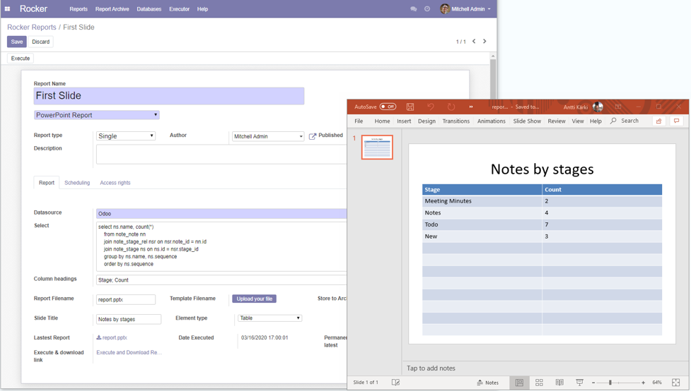
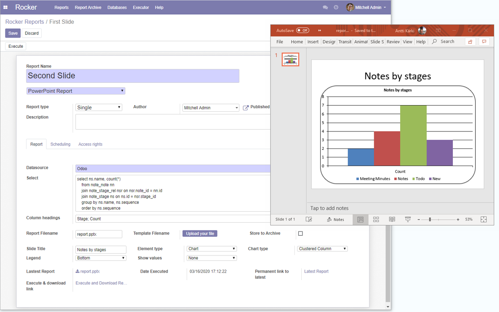
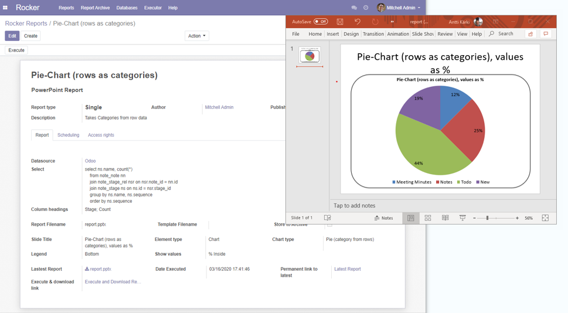
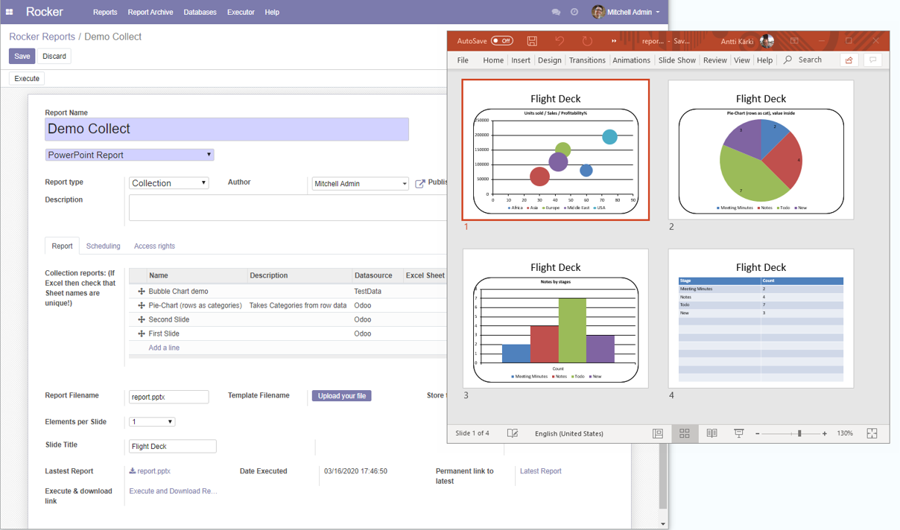
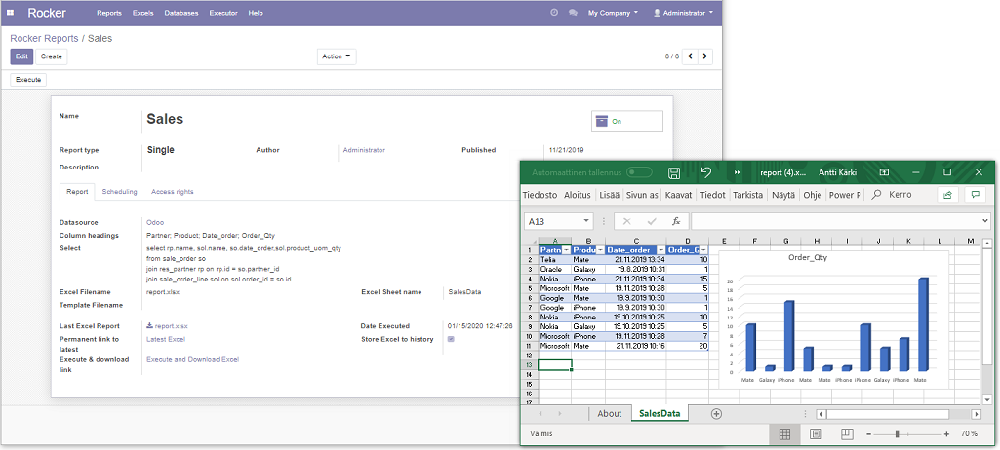
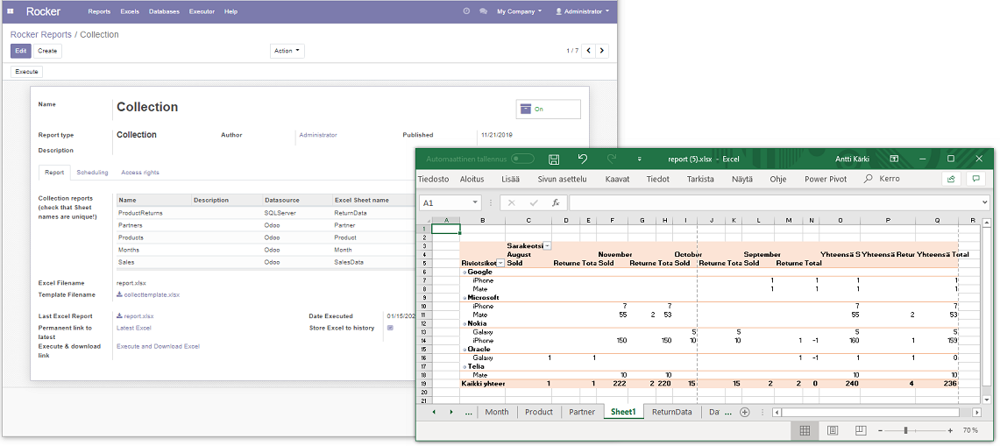

Rocker Reporting V3
for Odoo / Linux, Unix & Windows platforms
Odoo 12.0 & Odoo 13.0 & Odoo 14
Collect data to Excel or Powerpoint from various data sources, Present business data with Powerpoint graphs.
Or use Excel templates to present business graphs.
Get data from Odoo & external PostgreSQL, SQLServer, MySQL, MariaDB, ODBC or Oracle databases. Send reports by
email.
Requirements:
- Odoo 12 or Odoo 13 or Odoo 14 installed
- Support Linux, Unix & Windows servers
- Does not need Excel or PowerPoint installed on server
- Openpyxl, Python-PPTX & Pandas python packages installed on server
- Datasource drivers (PostgreSQL, SQLServer, Oracle, MySQL, MariaDB etc.) installed on server based on
your
needs
News/Notes:
Guides:
Guides in zip/rocker_app_v3_static/description -folder
-
Excel Charts/Pivots User Guide
-
Email
User Guide
-
Powerpoint
User Guide
-
Install
Guide
Examples:
-
Powerpoints: Powerpoint table slide

-
Powerpoints: Powerpoint Column Chart slide

-
Powerpoints: Powerpoint Pie Chart slide

-
Powerpoints: Powerpoint Collection

-
Rocker Excel example: Data from single datasource

-
Rocker Excel example: Collection reports, data from many datasources

Demos:
-
View Powerpoint demo
-
View Basic demo
-
Get data from SQLServer
demo
-
Collection Reports demo, get data from
many data sources
-
Access rights demo
-
Hyperlinks demo
-
Scheduler demo